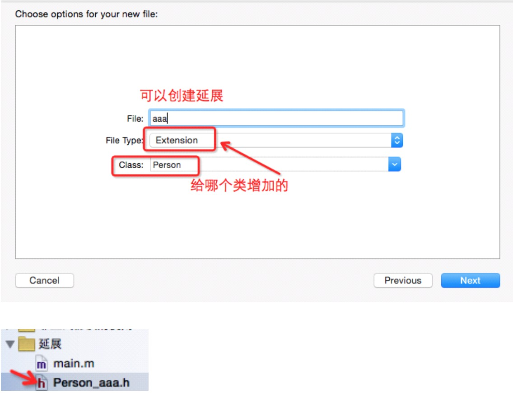

@interface MyClass ()
{
//类扩展 float value;
}
- (void)setValue:(float)newValue;
@end
匿名分类,又叫类扩展,所谓的扩展,其实就是为一个类添加额外的原来没有的变量、方法或者合成属性。通过界面创建延展: 
2）第二种实现延展的方式是延展没有独立的头文件,在类的实现文件.m中声明和实现延展,这种方法可以很好的实现方法的私有,因为在OC中是不能引入.m的文件的。
.m文件
@interface SceneManager ()
+ (void) wrap;
@end
@implementation SceneManager
+ (void) wrap {
NSLog(@"method of wrap"); }
@end
调用
[SceneManager wrap];
实例变量默认是私有类型的(作用范围只能在自身类,而不是子类或其他地方);